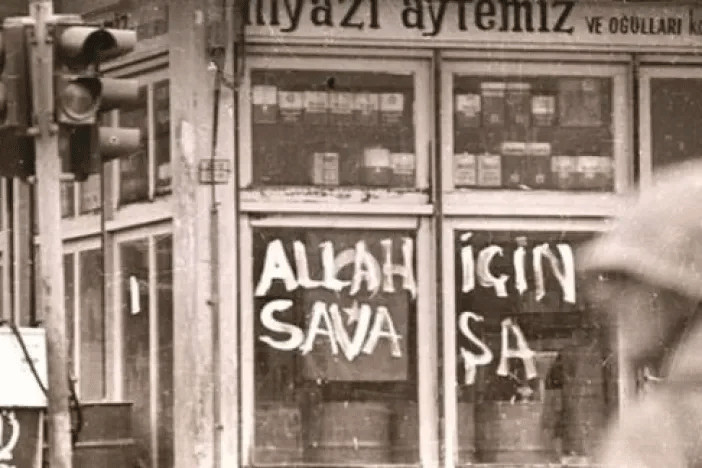
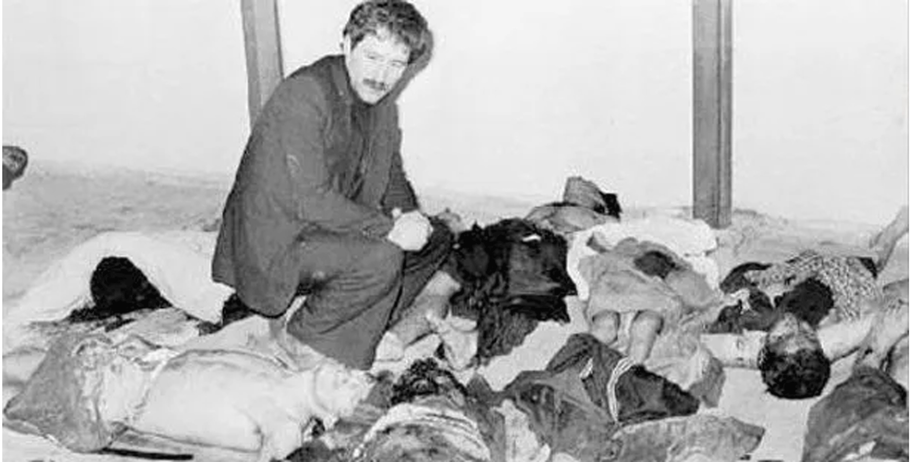
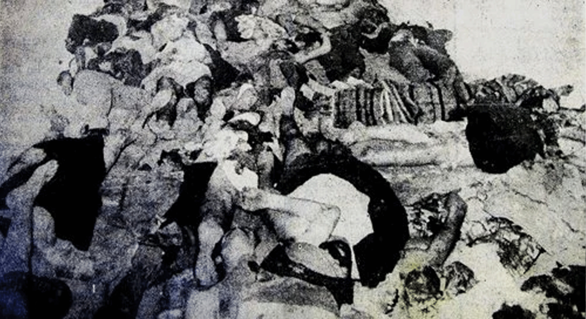

BLOODY MAY - BLOODY MAY - BLOODY MAY - BLOODY MAY - BLOODY MAY - BLOODY MAY - BLOODY MAY -
BLOODY MAY - BLOODY MAY - BLOODY MAY - BLOODY MAY - BLOODY MAY - BLOODY MAY - BLOODY MAY -
BLOODY MAY - BLOODY MAY - BLOODY MAY - BLOODY MAY - BLOODY MAY - BLOODY MAY - BLOODY MAY -
PKK IS A TERRORIST GROUP - PKK IS A TERRORIST GROUP - PKK IS A TERRORIST GROUP - PKK IS A TERRORIST GROUP - PKK IS A TERRORIST GROUP -
PKK IS A TERRORIST GROUP - PKK IS A TERRORIST GROUP - PKK IS A TERRORIST GROUP - PKK IS A TERRORIST GROUP - PKK IS A TERRORIST GROUP -
PKK IS A TERRORIST GROUP - PKK IS A TERRORIST GROUP - PKK IS A TERRORIST GROUP - PKK IS A TERRORIST GROUP - PKK IS A TERRORIST GROUP -
MARAŞ '78: DETAILS

"To the war for Allah", they were also marking houses "X" as their targets
The Maraş Massacre was triggered on December 19, 1978, by a low-intensity bomb thrown
into the Çiçek Cinema in the city. During the screening of the film "Güneş Ne Zaman Doğacak"
(When the Sun Will Rise), this attack was turned into a disinformation campaign by right-wing groups,
claiming that "leftists and Alevis are bombing the mosque." The following day, the murder of two
leftist teachers and the subsequent attacks on their funeral processions escalated tensions. Calls for
"jihad" were made in the city,
exploiting religious sentiments and directing aggressive crowds toward Alevi neighborhoods.

Aftermath
By December 24, the events transformed into a planned genocidal attempt.
The primary targets were
Alevis,
leftists, and
Kurdish citizens. Attackers
assaulted pre-marked houses using automatic weapons, axes, dynamite, and flammable materials.
Children, women, and the elderly were brutally murdered without discrimination; incidents of
torture, rape, and looting occurred. Alevi neighborhoods were placed under siege, with all
entrances and exits blocked. During this period, local security forces did not intervene,
and the systematic attacks continued for seven days.

Aftermath
At the end of the massacre, 111 citizens died according to official data,
while independent sources suggest nearly 500 fatalities.
Thousands of buildings were destroyed, and a massive wave of migration began.
It was alleged that the MHP, Grey Wolves (Ülkü Ocakları), deep state structures,
and the MİT were behind the events. The state's silence and the deliberate failure to
ensure public order created the perception that "the state had lost its authority."
This environment of chaos provided one of the primary grounds of legitimacy for the Turkish
Armed Forces to carry out the September 12, 1980, military coup under the pretext of "restoring
peace and security."